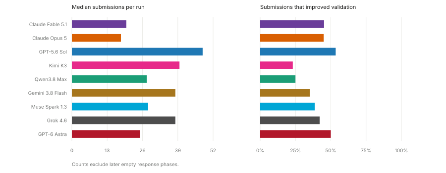
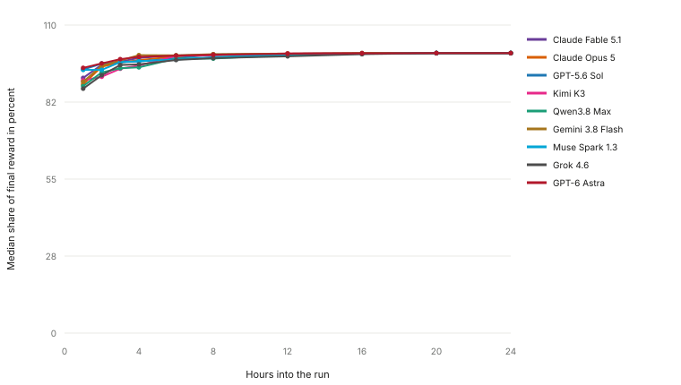
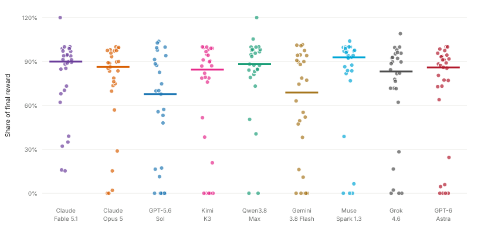
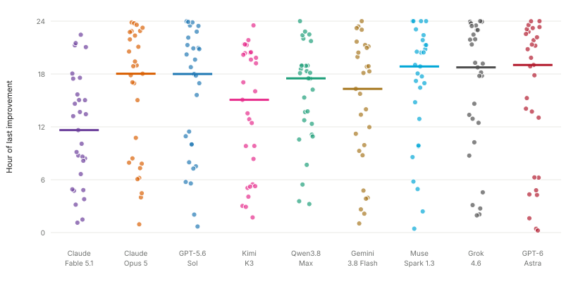
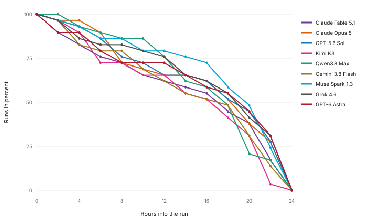
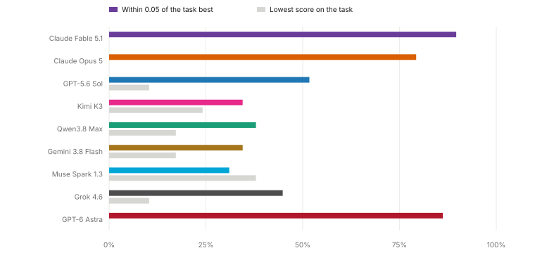
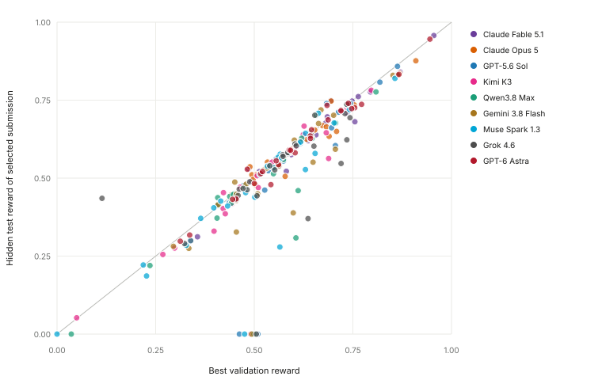

General analysis plot review
These are candidate plots for the benchmark blog. The build reads the selected runs from site-data.js. It therefore uses the same evaluation IDs as the benchmark pages.
Submission pace
GPT-5.6 Sol has the highest median submission count at 48. Claude Opus 5 has the lowest at 18. GPT-5.6 Sol has the highest median share of submissions that improve the best validation reward at 53%.

How early models reach their final result
At hour 8, the model medians range from 98 to 100 percent of the final hidden test reward. This plot shows whether long runs change the selected result.

Strength of the first submission
Muse Spark 1.3 has the strongest median first submission relative to its final selected result at 93 percent.

When the selected result last improves
Kimi K3 has the earliest median final improvement at hour 16.0.

Which models keep improving
Muse Spark 1.3 has the largest share of runs with a later hidden test improvement after hour 12 at 79 percent.

Reliability across tasks
Claude Fable 5.1 finishes within 0.05 of the task best on 90 percent of comparable tasks. It finishes last on 0 percent.

Validation and hidden test agreement
Points below the diagonal have a lower hidden test reward than validation reward. Large gaps are candidates for discussion about generalization or task specific score noise.

Manual root cause plot
I did not render the imported root cause plot as a current result. It depends on manual transcript labels for the older rollout set. The score snapshot does not contain those labels for replacement evaluations. A current plot would require labels for each newly selected run.